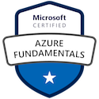
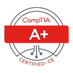
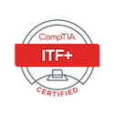
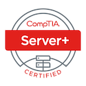
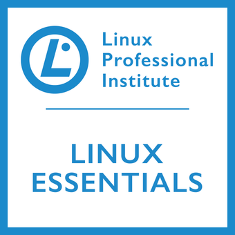

Credentials / Training
Learning that supports
practical work.
Credentials and coursework listed in the supplied resume, alongside retained artwork. Badge artwork alone does not authenticate an issuer record or establish current renewal status.
Inspect the original credential list in my resume →Microsoft and infrastructure

MTA Windows Server Administration Fundamentals
Open retained artwork
MTA Networking Fundamentals
Open retained artwork
MTA Security Fundamentals
Open retained artwork
Support, server, and Linux

CompTIA A+
Open retained artwork

CompTIA ITF+
Open retained artwork

CompTIA Server+
Open retained artwork

LPI Linux Essentials
Open retained artwork

Additional coursework and recognition
Google IT Support
Open retained artwork
Cisco Introduction to Cybersecurity
Open retained artwork
MyComputerCareer · WCITP
Retained academic recognition artwork.
Open full retained image
freeCodeCamp Responsive Web Design
Listed in the supplied resume. No separate issuer-verifiable certificate is provided in this curated set.
Read the owner-provided resume entryVerification boundary
No credential is presented as independently issuer-verified or currently renewed. The retained images and original resume are available for review; hands-on technical results are linked separately in the case studies.